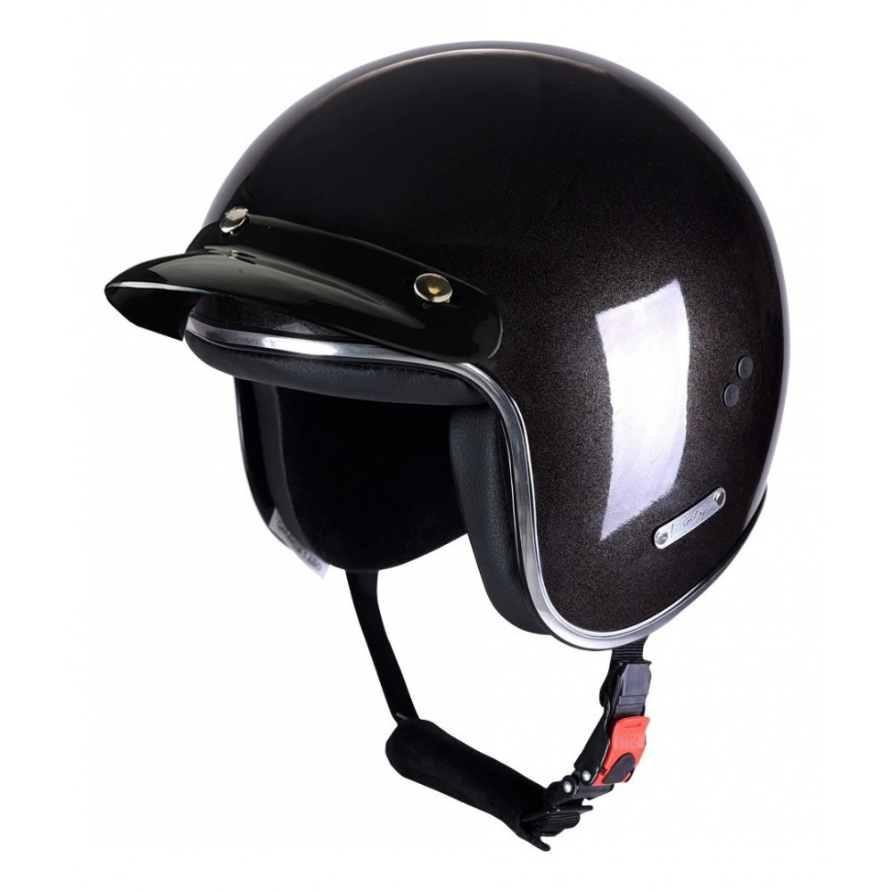
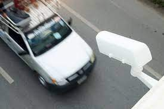

Mitos sobre seguridad vial

El casco dificulta la visión
FALSO. El casco no afecta la visión periférica y es
un elemento de seguridad que ayuda a prevenir
lesiones graves. Los estándares internacionales
de seguridad requieren que los cascos provean
una visión de 210°, cuando la visión periférica de
una persona es de entre 200° y 220°

Los radares fijos son inexactos
FALSO. Los equipos cinemómetros son homologados
por el Instituto Nacional de Tecnología Industrial
(INTI). En caso de que exista una diferencia de
medición mayor al 3% no son aprobados para su uso
Hay formas que permiten superar
una prueba de alcoholímetro
FALSO. Lo que hace el alcoholímetro es medir el
alcohol en sangre, procedimiento que no se puede
eludir con métodos como mascar chicle ni comer
granos de café, que son generadores de saliva.